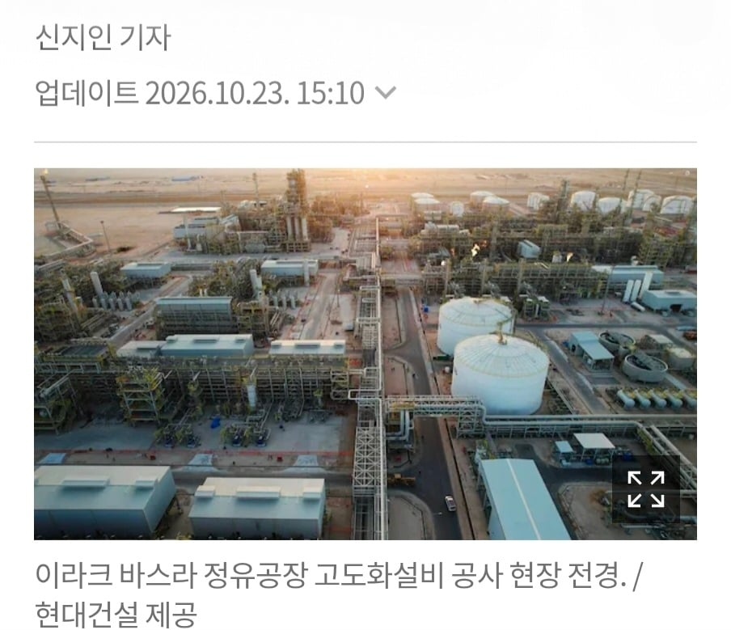
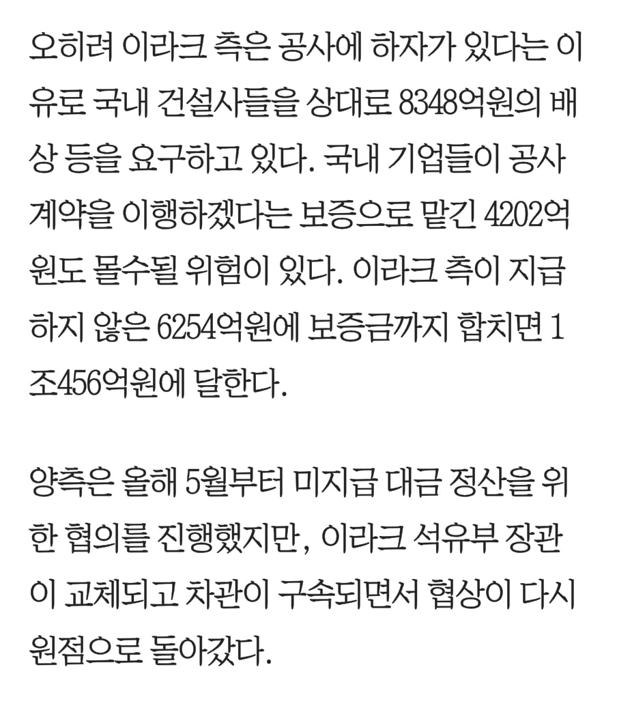
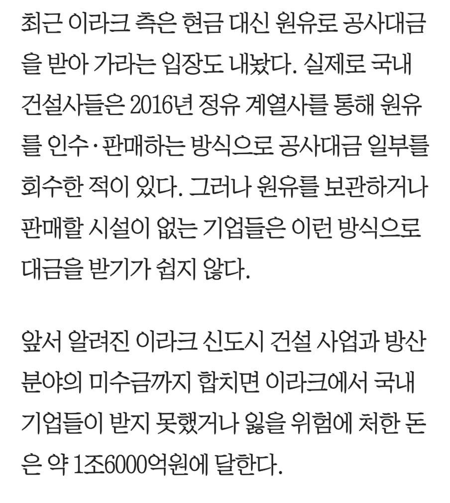

이란 호르무즈 봉쇄 뚫고 이라크까지 가는 거 자체가..
기업 입장에서는 별로지.
중고나라 돈으로 바꿔오세요 짤 모름?
그걸 한국까지 갖고오는 운수비용은?
이송, 보관, 판매 다 쉽지 않은데 한번도 해본적 없는 건설사들한텐 난감한 일이지
뭐 현대오일뱅크
현대건설 둘다
현차꺼니까
지들 그룹끼리 할라면 저기서 기름 가져오는건 문제도 아니지
오일뱅크에는 아람코도 껴있어서 운송도 어찌 하면 될거고 ㅋㅋㅋ
현대오일뱅크는 HD현대여~
말을 잘못했네 저기 지분구조가 현대차가 꽤 들고있음
현대차가 현대건설도 들고있고
아람코도 껴있고
뭐 할라면 할수는 있을듯
글킨 해 품이 많이 들어서 그렇지. 근데 원문에서 지적했듯 자사 터미널 없는데는 대금 받기 쉬운 일은 아닌것도 맞음
그 어찌하면이 존나 빡세단거야..
이게 옛날 90년대 러시아 차관 때 논리임.
한국 금융기관들이 러시아에 돈 빌려줬는데, 돈 못 갚으니까 러시아가 불곰사업 때 무기로 갚음.
정부는 무기를 받아서 우리나라 방산업체들이 성장했음.
그리고 그 때 돈 빌려준 금융기관들은 한 푼도 못 받고 전액 손실처리함.
그리고 저런거 계속 시도는 함. 손해보는 기업은 100% 손해고, 이익보는 쪽은 100% 이익, 중재 따위 없는 구조로.
바로 전 정부도 인도네시아 협력 KF21 사업 때 비슷한거 시도함. 시중은행들 불러서 너네가 인니 돈 1조 대납하고 인도네시아 정부한테 구상권 청구해서 받으라고ㅋㅋ
당시 어떤 은행 부장님이 ‘내가 초년생 때 저 러시아 차관 관리했다. 이번엔 정부가 어떻게 책임 질거냐’라며 길길이 날뛰어서 무산됨.
아, 정부측 담당자는 ‘인니한테 너네가 알아서 받으셔야죠‘라고 함ㅋㅋㅋ
후진국에서 사업하면 상시 있는 리스크 중 하나 ㅋㅋ ㅠㅠ
사업 리스크지 뭐 .. 어쩌냐..
하이리스크하이리턴 사업이 뭐
사우디랑 아랍에미리트가
선녀였나
난 양아치들은 군대로 다스려야 한다 생각함. 우리나라 군대가 언제까지 평화주의일거라 생각하나?
한국은 대양해군이 없는데 뭔수로 물리력을 투사함? ㅋㅋㅋㅋ
현무
육군만 거대한 우리가 이라크에 뭘 할수 있죠?
이라크 정벌하려하니 길을 열어주시오라고 중국에게 통보한다
미국도 이라크 이란 조졌다가 휘청였는데 한국을 참 높게 평가해주시네
정유사랑 파트너쉽 ㄱ
꼴받긴한데 그거밖에 더있나
저동네 특임
플랜트건 탱크건 짓다가 전임자 나가리되면
하던거 올스탑되고 돈못받고 공사중단 혹은 다짓고 돈 못받기 ㅋㅋㅋ
이란이고 이라크고 그쪽동네 가서 제대로 돈받은 업체가 드물다
계속 뻐팅기면 군함 보내서 항구 점령해놓고 사용료 받아야지
저기 군함 보내려면 호르무즈 해협부터 뚫어야 함ㅋㅋㅋㅋ
사실 저러면 딱히 대책은 없음.
근데 이라크는 이제 그 어떤 나라랑도 개발사업 못함.
사업은 망할 수 있어도 신용은 잃어버리면 그걸로 끝임.
우크라이나 재건도 함부로 들어가면 안되는 이유
내가 해외 플랜트하다 커리어 바꾼 이유가 저건데 해외에서 플랜트 공사하면 적자 안보면 다행인 수준이다.
어디로 바꾸셨어요? 저도 제조사 가고싶은데 이직이 매번 탈락 중이라 탈건 하고싶네요..
제조업으로 이직했는데 기약없는 해외생활 보다는 훨씬 안정적입니다.. 저는 기계 전공이라 이직이 수월한 편이었는데 그것도 이미 수년 전 일이라 요즘은 또 어떤지 모르겠네요 일 구하기가 만만치 않다고해서..
나올때 다 터트리고 나오는게 답이겠네 뭐
어차피 이라크에서도 이쪽에다 뭔짓 못할거고 우리도 그쪽에서 배째라 하면 답없는데 어차피 손실날거 니새끼들이랑 거래 안한다 박고 엿이나 먹이고 오면 좋을듯 ㅋㅋ
우크라도 나중에 이지랄할듯
이미 폴란드 회사한테 그러는중
국가 입장에서는 원유로 받아오는게 좋지않음?
요즘 원유 존나 비쌀텐데